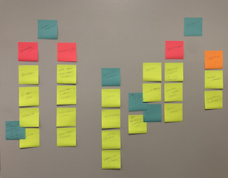
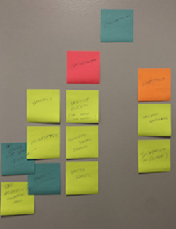

Overarching Goals
Client
- Prompt audience to serve.
- Give concise information about organization.
- Create partnerships with churches and groups.
- Get volunteers.
- Gain monetary support.
Audience
- See the heart behind the organization.
- Get information on how to serve.
- Volunteer time.
- Understand how to give.
Website
- Be clear and concise.
- Convey the mission of the organization.
- Make actions simple.
- Be interesting and prompting.
Sticky Note Research
I started out with trying to grasp every individual and group that is involved in the process of FillWaterBottles.com. From organizing packing parties, locating people and groups in need, packing bottles, and trasnporting and distributing.
Next, I specified every group that would possibly be related to the organization. Since FillWaterBottles.com is a global organization, there is a lot of involvement from vastly different groups. Schools in the US contribute help by having teams and clubs pack bottles. They are also great spaces for recruiting volunteers and interns. Schools across the globe are often easy to partner with to distribute bottles. Churches play a large roll in the work, and account for much of the volunteer hours. Small groups, youth groups, and even individual members play vital roles in different steps of the process; but churches as a whole help market the organization by word-of-mouth.